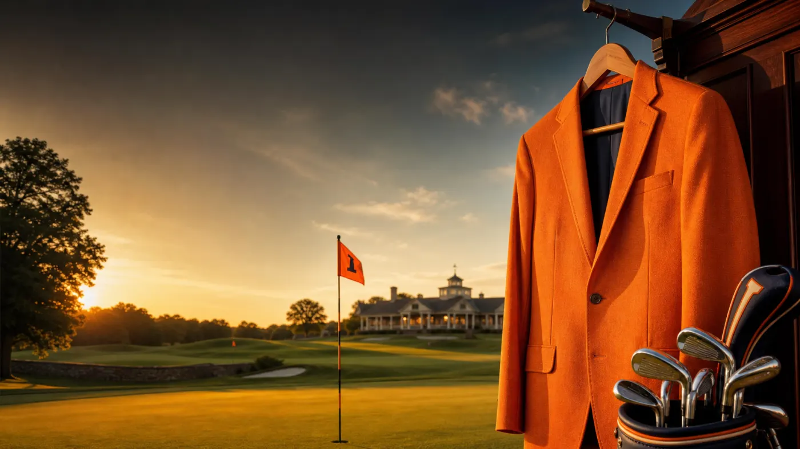
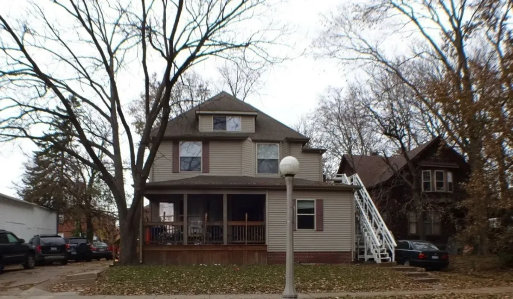
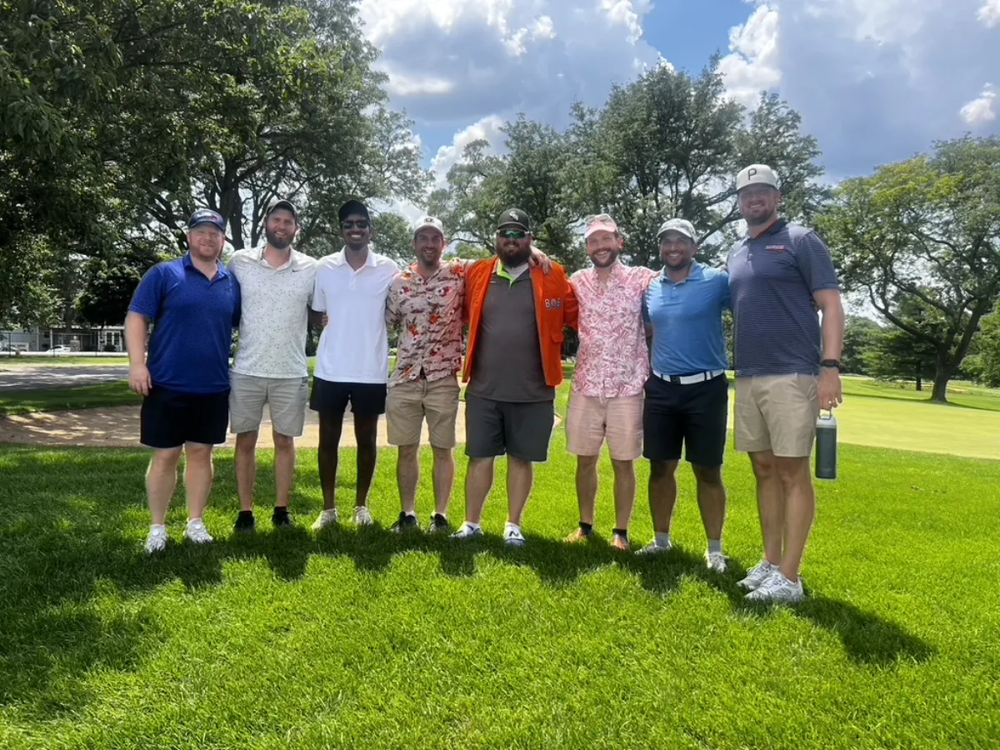

A tradition like many others.
The 808 Classic
Second Annual. First Real Attempt at Legitimacy.
The 808 Classic is the annual golf trip born after the group ran out of bachelor parties and needed a new sanctioned reason to reunite. The name traces back to 808 California Ave in Urbana, where the 808 Cali Bros lived senior year before graduating in 2013. Year two brings the jacket to Seattle, partly for Chuck's Mariners agenda and partly because the West Coast delegation was not going to object.
Arrivals & Departures
| Name | Arrival | Departure |
|---|
Where We Are Staying
Course Schedule
Events & Logistics
The Field
Guests & Side Quests
History


The inaugural 808 Classic was held in the Chicagoland area, with Chuck hosting at Chuck's House and ultimately taking possession of the Orange Jacket. The victory was legitimate in the way all early tournament traditions are legitimate: by consensus, convenience, jacket fit, and the absence of a scoring system that could withstand legal review.
The 2025 routing included Zigfield Troy, Big Run, The Preserve, a large-field scramble at Ruffled Feathers, and a Sunday round at Belmont in Downers Grove. The photo here is from Belmont, where the tournament briefly resembled an organized sporting event.
Seattle is missing several key members of the extended 808 universe: Hadrien and Arnaud Brisard, Bill Buchdal, Aaron Darroch, Nick Greenway, and the mystery roommate whose legacy remains mostly archival.